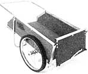

There are several good reasons why a two-wheeled yard cart is a better choice than a conventional wheelbarrow, at least for most of us. For one thing, the cart's additional wheel shoulders the burden of side-balancing a cumbersome load. For another, the axle is located more toward the middle of the box, to distribute that weight more evenly. And the wheels are bigger, to reckon with rough, unmanicured terrain.
Even if you're not hauling a lot of weight, consider that the cart will hold perhaps 8 or 10 cubic feet of bulky material (twice the common barrow's capacity); that its end gates are removable, to accommodate long and odd-shaped loads; and that its flat bottom platform makes a fine field bench or planting work station.
These days, quality handcarts are available everywhere, thanks to the convenience of mail order. And you can be sure that reputable manufacturers have taken care to equip their products with utility-grade wheels, heavy-duty framing, and durable wooden panels, to give customers every penny of their money's worth.
So chances are you'd spend as much trying to duplicate a quality cart as you would simply buying it. It's for exactly this reason that MOTHER researcher Dennis Burkholder took a fresh approach when he put together a garden cart designed as much for the enjoyment of the home-shop builder as for the use of the home-scale grower.
One of the cart's nicest features is that it can be made almost entirely from one sheet of B-C exterior plywood, a 48" X 71" section of 1/8" tempered hardboard, and a couple of 8-foot 2 X 4s. Another is that you'll need only basic hand tools and a few power tools (a jigsaw, a drill, and a circular or table saw) to complete the job.
What's more, because the spindles are individually mounted to the fenders, there's no need for an oversize axle or the costly specialhubbed wheels that fit it. The 20" molded nylon bicycle wheels Dennis used came, complete with axles and ball bearings, from a discarded BMX bike, , and can support several hundred pounds comfortably. They're also tucked beneath the fender wells so an overflowing load can't tangle up in them.
And if you've ever maneuvered a jam packed barrow downhill, you'll surely appreciate this cart's caliper brakes. They control momentum and help in turning, too.
Willing to give this weekend project a try? Start by locating a set of bike wheels and cable-operated caliper brakes. Use both wheels from one bike or find a pair with the same diameter and tire size. Wire spoke types are OK, but may not support as much weight as would nylon or plastic designs.
Then buy or scavenge the hardware and the various metal parts of the cart specified in the illustration. The conduit will have to be shaped with a bender; if you can't borrow one, you might talk an electrical contractor into making the bends for you. As an alternative, you could use hardwood shafts like those on a wheelbarrow to replace the tubular handle and leg.
One full sheet of plywood will yield the cart's structural parts if you plan the cuts as indicated on our diagram. The fender outlines are the most difficult to lay out; it's best to make a cardboard template of these, and trace it onto the wood before cutting.
The hardboard parts include the side flares, the nose gates, and the fender backs. If you can do without the extra capacity offered by the flareboards, you'll need only a 23" X 39" piece of board to complete the cart.
Notice that we've strengthened the thin hardboard with stiffeners cut from 2 X 4s. When fastening them to the edge of a panel, you'll need to cut a dado, or groove, about halfway into the wood so the pieces make a good joint. Use a reliable construction adhesive to secure all the stiffeners, whether they're groove- or flush-mounted.
Each fender assembly should be match-cut so its back fits smoothly against the contours. To do this, clamp two fender sections together, side by side, and retrim the arcs so both are symmetrical. Then fasten the back section to the matched pair's curved edges with construction adhesive and 4d nails placed every 2 inches. To make things easier later, mark and drill the holes for the axle supports, the fender bolts, and the brake brackets before buttoning up the fender wells.
Now you can put together the box. The floor supports are 12 inches apart, on edge, and centered on the platform. The sides butt against the ends of the supports. Bond the wooden parts together with adhesive and No. 10 X 1 1/2" flathead screws. Then, while the glue is drying, bolt the angle iron brackets to the front edges, leaving a 3/16" gap behind them to allow the nose gate to slip in.
Once the adhesive has set, you can bolt the fender assemblies to the box (the wheel axles should be about 18 inches behind the front corners), fasten the handle beneath the rear corners, and attach the leg to the sides. The tailgate is hinged to the rear of the platform and is held at the top with hasps and swag chains. Now's the time, too, to install the brake brackets and calipers, and clamp down the hand levers and cables.
If you've chosen to make flareboards, bend the angle brackets to 45° and bolt them to the panels in paired sets. One other option you may consider is the tool caddy, a removable tray made from leftover plywood and hardboard. This is a simple glue-and-tack project that's detailed in a separate illustration.
Before you take to the fields with your new creation, be sure to protect the wood and hardboard parts with exterior paint or a good outdoor sealant. Paint the bare metal, as well. If you treat your cart with even moderate care, it'll last as long as any quality tool.
Editor's Note: For those who'd prefer to follow step-by-step building instructions, a complete set of detailed plans is available.
|
? 1986 GARDEN WAY INC. The detachable flareboards let you haul large loads of bulky material, such as these to-be-composted trimmings. |
The tool caddy can fashioned using scraps left over from the cart project. |
 |